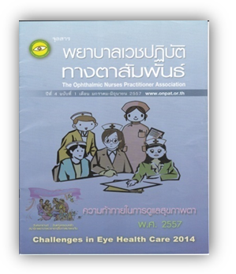
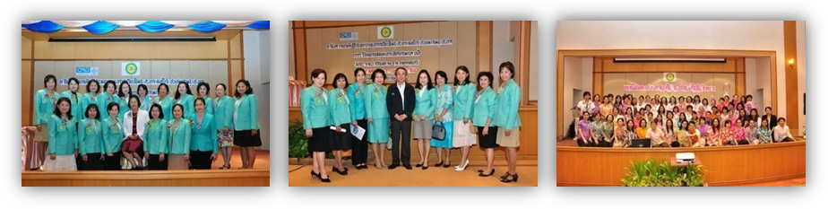

วันที่ 30 เมษายน – 2 พฤษภาคม 2557 ประชุมฟื้นฟูวิชาการเชิงปฏิบัติการสำหรับพยาบาลเวชปฏิบัติทางตาครั้งที่ 10 /57 จัดโดยสมาคมพยาบาลเวชปฏิบัติทางตา ณ โรงแรมเอเชียแอร์พอร์ต(ศูนย์การค้ารังสิต) ถนนวิภาวดี จังหวัดปทุมธานี เป็นเวลา3วันมีผู้เข้าประชุม 250 คน เรื่อง “ Challenges in Eye Health Care 2014” ปาฐกถาพิเศษ ที่มาและทิศทางของพยาบาลเวชปฏิบัติทางตากับการดูแลสุขภาพตาเพื่อคุณภาพชีวิตที่ดีของประชาชน โดยอดีตนายกสภาการพยาบาล, เนื้อเรื่องการบรรยาย เช่น ความพร้อมสู่ประชาคมอาเชียนของพยาบาลเวชปฏิบัติทางตา, ทิศทางและนโยบาย สปสช.กับการจัดการทรัพยากรในการรักษาพยาบาลผู้ป่วย, ตัวชี้วัดทางจักษุสาธารณสุข, การจัดทำข้อมูลทางจักษุและผลลัพธ์การดูแลผู้ป่วย,การเสนอนวัตกรรมและผลงานการประดิษฐ์ของพยาบาลเวชปฏิบัติทางตา


ภาคค่ำจัดงานรดน้ำดำหัวพี่พยาบาลสูงวัยเนื่องในวันสงกรานต์และมุทิตาจิตให้สมาชิกสมาคมผู้เกษียณอายุ
มกราคม – มิถุนายน 2557 จัดทำจุลสารพยาบาลเวชปฏิบัติทางตาสัมพันธ์ ปีที่ 4 ฉบับที่ 1 จุลสารพยาบาลเวชปฏิบัติทางตาสัมพันธ์ ปีที่ 4 ฉบับที่ 1 สามารถนำไปแนะนำผู้หญิงที่อยากสวยแต่ต้องเสี่ยงทั้งใบหน้าและจากยาทาเล็บได้